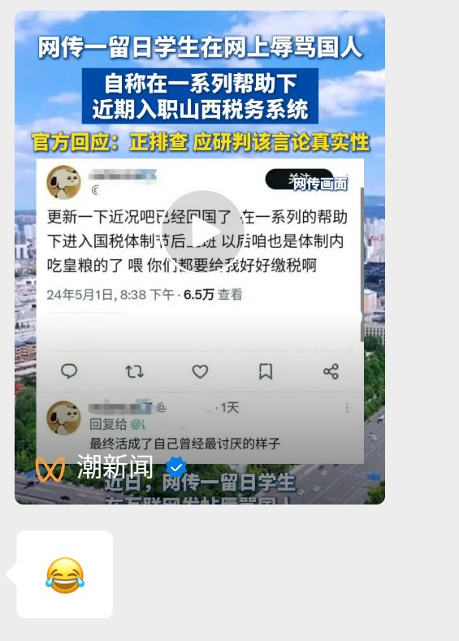

サイバー環状線
@CyberKanjousen
一外国人在■国拥挤的公交车上向一位先生发问：「这辆公交车上的都是什么人？」
答：「都是『人民』。」
稍后，外国人看到一辆豪华跑车飞驰而过，「那辆跑车上的呢？」
答：「那是『人民公仆』。」

風月无边夜未央
@Yujiudu
绝大部分干部子弟的半生
国内青少年时期物欲满足 无忧无虑过完十几年 之后去海外留学享受发达国家小资生活 毕业后留在海外生活或者回国包办进入体制内吃特供
“人民公仆”的子女 依然继续为人民服务 https://t.co/X5ZPbBrK4c